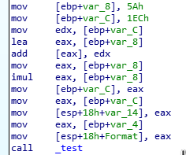
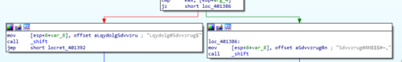
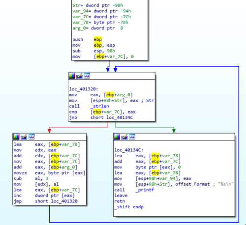
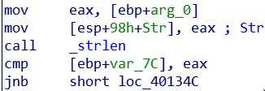
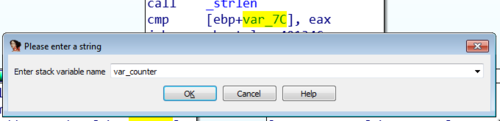
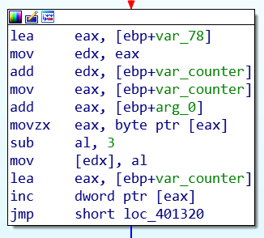

IOLI Crackme 0x03
I am continuing my reverse engineering review by tackling the IOLI crackmes by @pof. These are beginner friendly challenges that is perfect for newbies or for those who want to review the basics like me. Check out my writeups for 0x00, 0x01, and 0x02.
Getting the password
After opening the program in IDA I immediately saw that the code is almost exactly as the one in challenge 0x02, with the exception of our expected cmp command being inside the _test function.

Reading through the code I realized that the password for this challenge is exactly the same as the previous one!
But what's this? The success and failure messages are all garbled? And plus, what is this other new function called _shift?

A different kind of challenge
Opening up the _shift function shows us a short, but interesting looking program flow with two branches and one of the branches looping back. It seems we have a loop here that we could investigate.

If we look at the input that the function takes we will find out that the strings that are being passed from the _test function are Lqydolg#Sdvvzrug$ and Sdvvzrug#RN$$$#=, for the failure and success messages, respectively. This tells us that a cipher is applied to these strings. What cipher it is using is what we'll be trying to find out.
Discovering the cipher
The best way to discover the cipher used is to step through the code. We can do it with both static or dynamic analysis, but the latter is way easier.

The code above starts with mov eax, [ebp+arg_0] which copies the pointer to the string passed to our _shift function. We then copy that pointer to [esp+98h+Str] which is the memory location pointing to the top of the current stack. This is done so that it can be passed as an argument when we do call _strlen.
After executing, _strlen returns the length of the specified string and is saved to register eax. This is then used in the line cmp [ebp+var_7C], eax.
But what is the value of var_7C? If you scroll up at the start of the subroutine, var_7C is assigned a value of zero. If you know how loops work, you'll realize that this variable is going to be used to hold a counter value. It starts at a value of 0 and it will eventually be incremented after every loop, which is what is happening at 401348.
To make it easy for us to remember this, let's rename var_7C to a more memorable name like var_counter.

So going back, to the comparison command cmp [ebp+var_counter], eax, which now translates to cmp 0, 17. 17 being the length of our failure string Lqydolg#Sdvvzrug$. Since this is not equal it now goes to this next block of code.

Now this block is interesting. There's a lot that is happening but the gist of it is that the program gets one character from the input string, with var_counter as an offset. It then decrements that character value by 3, and added to a destination string. I'll be going through the code that I described step by step in the next section.
Stepping through
So to start, lea eax, [ebp+var_78] loads the address to var_78 which in my case points to the address 28FE90.
mov edx, eax copies that address to edx so we can use it on the next line.
add edx, [ebp+var_counter] adds to the address of var_78. Because var_counter is still 0, the address remains at 28FE90.
add eax, [ebp+arg_0] does the same thing as above but this time adding to [arg_0] which contains the address 28FF10.
movzx eax, byte ptr [eax] copies the byte contained in [eax] or 28FF10. In this case that byte contains the value 4Ch or L in ASCII. This is the first letter in our failure string Lqydolg#Sdvvzrug$!
sub al, 3 then substracts 3 to 4Ch making it 49h which is ASCII for I.
mov [edx], al saves the new character to the variable var_78 which is the memory location 28FE90. At this point in time the content is currently the character I. To make it easy for us to understand the code, let's rename var_78 to var_dest. This name is apt because this will be the destination for our shifted ASCII characters.
lea eax, [ebp+var_counter] and then inc dword ptr [eax] now increments the value of var_counter, which now makes it an integer value of 1.
Looping back
Alright. Now we go back up again to loc_401320. I'm not going to step through each line again, but I will highlight the important parts now that we have looped back.
cmp [ebp+var_counter] now translates to cmp 1, 17, which is still not equal.
add edx, [ebp+var_counter] now adds 1 to our var_dest variable, turning 28FE90 to 28FE91. The address for the arg_0 variable is also added by 1 at add eax, [ebp+arg_0].
By the time movzx eax, byte ptr [eax] is executed it now gets the next character in our failure string which is 71h or the letter q.
sub al, 3 converts are letter q to the letter n. And is once again saved to our var_dest variable with the command mov [edx], al.
Repeat until...
If I haven't lost you, then you should now be able to follow what will happen in the next steps:
var_counter will get incremented again and again, which will point to the next characters in the string. For example, the next characters: y then d then o will get shifted to v then a then l, respectively. This shifting of each characters will continue until cmp [ebp+var_counter equates to cmp 17, 17.
By the end, var_dest now contains the newly shifted string Invalid Password!. Finally! Applying the same code above to the success message, the garbled message would end with Password OK!!! :).
Wasn't that fun?
On to the next challenge
I hope I was able to explain properly the simple shifting algorithm used by the program above. I did it this way mostly for my own benefit and to make sure I really did understand how the algorithm worked in assembly. In future writeups I'll refrain from stepping through code at such a granular level, unless there is something really important that warrants it. Or maybe a video would be a much better format for these kinds of challenges?
Anyway, I look forward to the next challenge. Hopefully, you are too!